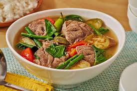

Ricetta del sinigang

Che cos'è il sinigang?
Il sinigang è una famosa zuppa tipica della cucina filippina, conosciuta per il sapore particolare del brodo che viene aromatizzato con il tamarindo.
Ingriedienti :
- 30 ml di olio di semi divisi in due parti
- 1 kg di pancia o costolette di maiale
- 1 cipolla grande divisa in quattro parti
- 1 pomodoro grande tagliato in quattro parti
- 30-45 ml di salsa di pesce
- 2,5 litri di acqua divisi in due parti
- 10-15 tamarindi o una bustina e mezza di aromi per il sinigang
- 3 pezzi di taro divisi in quattro parti
- 200 g di fagiolini tagliati in pezzi da 5 cm
- 3 peperoncini tailandesi o 2 peperoncini banana tritati
- 1 melanzana giapponese affettata
- 1 mazzetto di spinaci d'acqua
- 1 ravanello affettato
- Sale
- Pepe
Preparare gli ingriedienti:
- Scegli un ingrediente aspro. Il tamarindo è quello più tradizionale che viene usato per questa zuppa di maiale;
puoi cucinare il sinigang con il frutto fresco oppure usare un mix di spezie già pronto
- Quando usi il frutto fresco, hai bisogno di 10-15 unità; quando opti per gli aromi, ti serve una bustina e mezza di spezie (da circa 40 g l'una).
In alternativa, puoi usare la polpa di tamarindo già pronta (circa 100 g ), se riesci a trovarla nei negozi.
- Sebbene questo frutto sia quello più comune e più utilizzato per conferire al piatto un sapore aspro, puoi decidere di incorporare guava, bilimbi, ananas, mango verde, calamondino o sandorico;
gli altri aromi in polvere vanno bene mantenendo sempre le medesime dosi.
- Taglia la carne di maiale. Risciacquala e asciugala tamponando con carta da cucina; dividila poi in cubetti da 5 cm di lato.
- Puoi usare diversi tagli di carne, ma i più comuni sono la pancia e le costolette.
Le porzioni che includono le ossa (come le costine) migliorano il sapore del brodo; se lo desideri, puoi usare differenti parti del maiale per variare l'aroma della zuppa.
- Quando decidi di usare le costolette, dividile in porzioni singole, avendo cura che siano lunghe circa 5 cm; non togliere le ossa.
- Se hai optato per la pancia, taglia semplicemente la carne in bocconi da 3-5 cm.
- Affetta le verdure. Risciacquale e asciugale tamponando con carta da cucina prima di sminuzzarle in base alle porzioni.
- Taglia la cipolla e il pomodoro in spicchi o in quattro parti; sbuccia il taro e dividilo allo stesso modo.
- Taglia i fagiolini in segmenti da 5 cm oppure asportane le estremità prima di annodarli su loro stessi.
- Trita i peperoncini e dividi gli spinaci d'acqua in foglie.
- Affetta la melanzana in pezzi da 2-3 cm tenendo la lama in diagonale; sbuccia il ravanello e taglialo in dischetti da 1,5 cm.
Iniziare la preparazione:
- Scalda l'olio. Versa 15 ml di olio di semi in una pentola di grandi dimensioni e mettila sul fornello a fuoco medio-alto.
- Fai rosolare la carne. Aggiungi lo spezzatino di maiale nell'olio caldo, cuocilo mescolandolo spesso per 4 minuti o finché la maggior parte dei bocconcini non è ben rosolata su tutti i lati.
- Se il tegame ha un fondo stretto, dovresti rosolare la carne in lotti; in teoria, i vari pezzetti dovrebbero toccare direttamente la base della pentola mentre cuociono.
- Dopo aver scottato la carne, trasferiscila in un piatto a parte e mantienila al caldo.
- Scalda il resto dell'olio. Versa i 15 ml rimanenti nel medesimo tegame e riduci la fiamma a un livello medio.
- Aggiungi la cipolla. Soffriggila mescolando spesso per due minuti o fino a quando i vari strati non iniziano a separarsi.
- Mentre procedi, raschia il fondo del tegame per staccare i frammenti di maiale e lascia che questi si mescolino alla cipolla.
- Trasferisci il maiale nella pentola insieme alla salsa di pesce e all'acqua. Rimetti la carne sul fuoco incorporando anche la salsa di pesce e 2 litri di acqua mescolando bene.
- Aspetta che l'acqua bolla vivacemente prima di continuare; raggiunto il bollore, usa il cucchiaio per asportare con cautela la schiuma e i residui che si accumulano sulla superficie del liquido.
- Aggiungi il pomodoro e i peperoncini. Incorpora questi ingredienti mescolando per amalgamarli al resto.
- Lascia che il composto bolla per altri 4 minuti o fino a quando il pomodoro e i peperoncini non diventano morbidi.
-
Lascia sobbollire per 40-60 minuti.
Riduci il calore al minimo e aspetta che la zuppa bolla delicatamente per almeno 40 minuti o finché la carne non è perfettamente cotta e tenera.
- Controlla periodicamente il livello del liquido mentre la zuppa cuoce; rabbocca l'acqua, se necessario, affinché ce ne siano sempre 1,5 litri.
- Nel frattempo, inizia a preparare il tamarindo.
Schiacciare il tamarindo
- Fallo bollire.
Metti i frutti freschi in un pentolino di medie dimensioni e aggiungi 500 ml di acqua; porta il tutto a bollore e cuoci il tamarindo finché non diventa morbido.
- Dovresti proseguire la cottura finché la buccia esterna del frutto non si rompe, dovrebbero bastare 10-15 minuti; così facendo, la polpa dovrebbe diventare molto molle.
- Se hai deciso di usare la polpa commerciale già pronta, versala in una ciotola resistente al calore e scaldala a bagnomaria sopra 8 cm di acqua; aspetta 10-15 minuti o fino a quando la polpa non è abbastanza molle per essere schiacciata.
- Quando usi il tamarindo in polvere non devi procedere ad alcuna preparazione; puoi versarlo direttamente nella zuppa al momento giusto.
- Schiaccia il frutto. Scola l'acqua e poi riduci il tamarindo morbido in purea, usando la parte convessa della forchetta in modo da creare un impasto denso.
- Separa il succo. Trasferisci la polpa di tamarindo in un setaccio a maglia fine, schiacciala con la forchetta finché non escono i succhi e raccogli questi ultimi con una ciotola.
- Schiaccia anche i semi, dato che rilasciano qualche succo.
- Al termine, butta via le parti solide (semi, bucce e polpa) e conserva il succo per la zuppa.
Completare la preparazione
- Aggiungi il taro. Una volta che il maiale comincia a essere tenero, aggiungi gli spicchi di taro proseguendo poi la cottura a fuoco basso per 15 minuti o fino a quando il frutto non diventa morbido.
- Se stai cucinando le costolette, aspetta che la carne inizi a staccarsi dall'osso prima di incorporare il taro. Se invece stai usando un taglio senza ossa, come la pancetta, verificane la consistenza punzecchiandolo con la forchetta; quando sei in grado di trafiggerlo senza che si spezzi, aggiungi il taro.
- Se si forma della schiuma sulla superficie del liquido dopo aver inserito il frutto, asportala con un cucchiaio.
- Versa il liquido del tamarindo. Aggiungi il succo nel brodo e mescola.
- Prosegui la cottura per altri 5 minuti a bollore leggero; in questo modo, il sapore del tamarindo si fonde con quello del brodo e degli altri ingredienti.
- Se stai usando il tamarindo in polvere al posto del succo, versalo semplicemente nella zuppa e mescola per dissolverlo; lascia che il composto sobbolla per 5 minuti come faresti con il succo fresco.
- Aggiungi la melanzana e il ravanello. Disponi le fette delle due verdure nella zuppa mescolando per combinarle al resto degli ingredienti; prosegui la cottura per 5 minuti.
- Al termine, la melanzana dovrebbe essere quasi tenera e il ravanello leggermente molle.
- Incorpora i fagiolini. Aggiungili mescolando e falli sobbollire per 2-3 minuti.
- A questo punto la carne e tutte le verdure dovrebbero essere abbastanza morbide da poterle trafiggere con la forchetta; prosegui la cottura finché tutti gli ingredienti non sono pronti.
- Aggiungi gli spinaci d'acqua. Metti le foglie nella zuppa mescolandole; spegni il fornello e lascia la pentola coperta per far riposare gli ingredienti per 3-5 minuti.
- Dato che gli spinaci d'acqua sono ortaggi delicati, basta cuocerli con il calore residuo per evitare che si riducano in poltiglia; quando il piatto è pronto, le foglie dovrebbero essere appassite ma integre.
- Aromatizza in base ai gusti. Assaggia il brodo e aggiungi sale e pepe per bilanciare i sapori; se lo desideri, versa altra salsa di pesce.
- Dovresti regolare gli aromi in base alle tue preferenze personali, ma per preparare il vero sinigang na baboy il brodo dovrebbe essere aspro e salato.
- Porta in tavola. Trasferisci la zuppa nelle ciotole da portata usando un mestolo e gustala.
- Puoi anche rimuovere le ossa di maiale prima di portare il piatto in tavola o lasciare che se ne occupi ogni commensale, una volta che l'hai servito.
- Il sinigang na baboy viene spesso accompagnato con del riso cotto al vapore; valuta di guarnirlo con scalogno tritato, spicchi di limone o altra salsa di pesce.